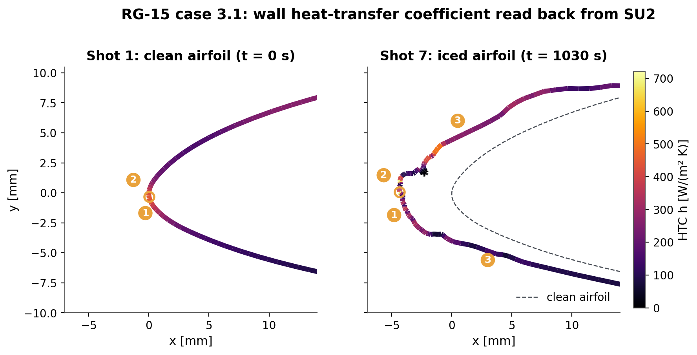
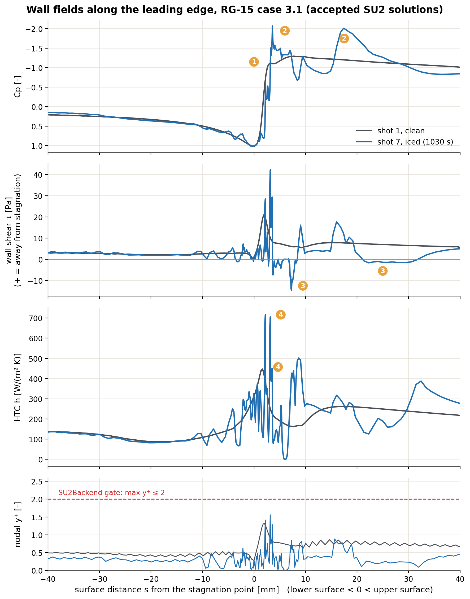
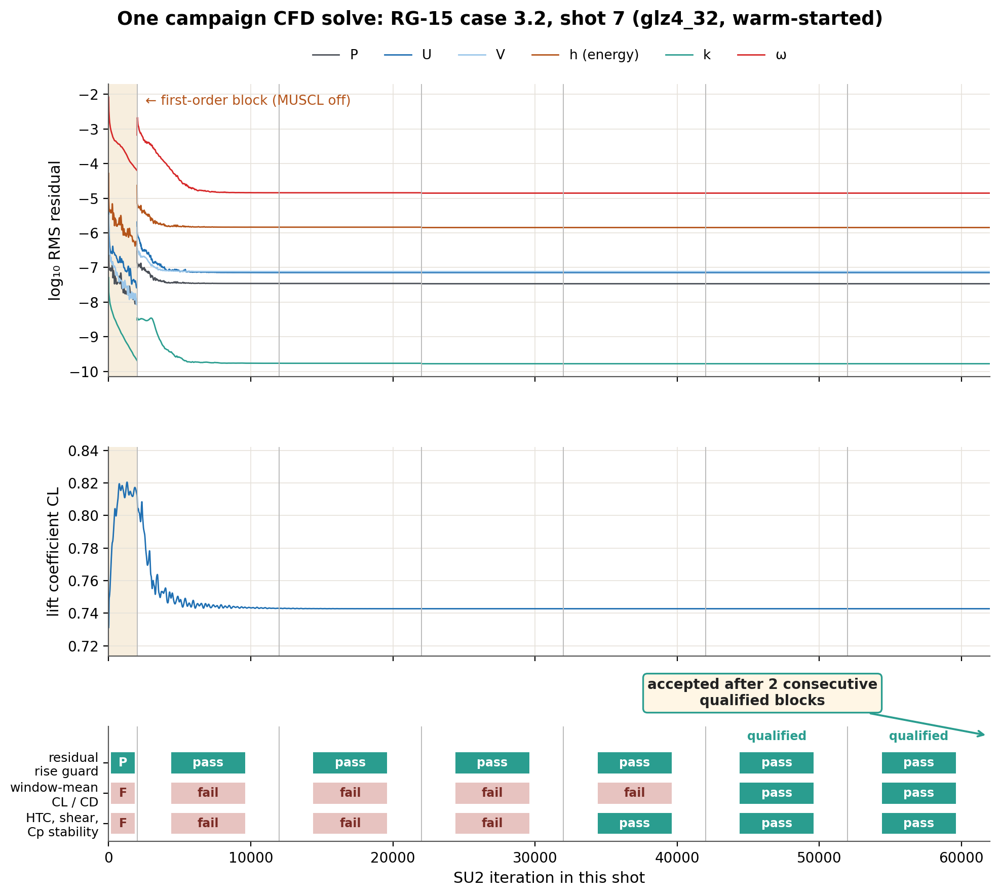
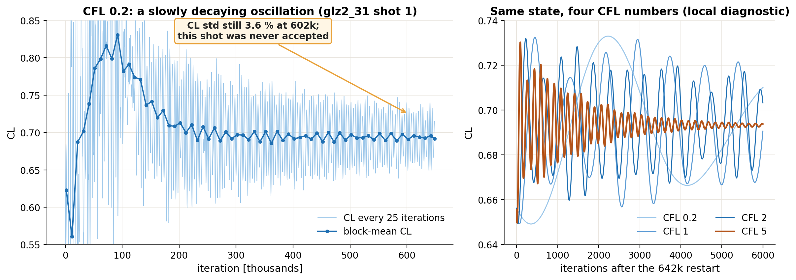
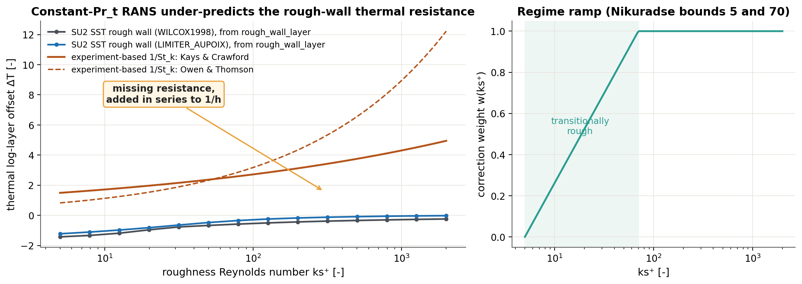

Airflow with SU2
Every icing shot starts with a flow solution. The open-source CFD code SU2 computes the air around the current (clean or iced) body, and the icing solver reads back four things from it: wall pressure, wall shear, a heat-transfer coefficient and the velocity field the droplets fly through. This page explains how that solve is set up, how the solver decides a CFD answer is good enough to use, and how the numbers are turned into icing inputs.
- Why the icing solver needs the airflow Basic
- What SU2 solves and how it is set up Basic
- What comes back: the wall fields Basic
- The heat-transfer coefficient and the recovery temperature Intermediate
- Units: nondimensionalization and output scaling Intermediate
- When is a CFD solution good enough? Intermediate
- Starting a solve: cold, first-order, restart, warm start Intermediate
- The wall-force diagnostic Advanced
- Rough ice walls Advanced
- In the code Advanced
- Assumptions and limits Advanced
Why the icing solver needs the airflow Basic
Ice grows where water arrives and where heat can be taken away fast enough to freeze it. Both depend on the air:
- Velocity field. Droplets are carried by the air. Small ones follow it around the body; large ones cannot turn and hit the wall. The droplet step integrates droplet paths through the CFD velocity field, so the velocity field decides where and how much water is collected.
- Heat-transfer coefficient (HTC), \(h\). The air removes heat from the wet or icy surface by convection. The energy balance uses \(h\) to compute that cooling. A higher \(h\) means faster freezing.
- Wall shear stress, \(\tau\). The air drags the unfrozen water film along the surface. The film step uses \(\tau\) to move runback water.
- Wall pressure, \(p\). The pressure gradient along the wall also pushes the film, and the local pressure gives a local recovery (adiabatic-wall) temperature when that option is on.
The airflow is solved on a fixed geometry, then held constant while ice grows for a "shot" of exposure time (for example 200 s). After the shot the geometry has changed, so the mesh is updated (Step 9) and the airflow is solved again. This is the usual multi-shot (quasi-steady) approach.
icing.su2.flow_config
(or, in campaigns, from a frozen template file). (2) Nothing is used before the acceptance gates pass. (3) The wall
fields are read back by coordinate matching in icing.fields.wall_fields. (4) The volume field becomes the
droplet velocity field, rescaled to m/s.SU2 is the solver's wind tunnel. It runs on the current shape, the icing code checks that the answer has settled, then reads off "how hard the air pushes and rubs on the wall" (pressure and shear), "how fast the air cools the wall" (HTC) and "where the air goes" (velocity). These are frozen for the next stretch of ice growth.
What SU2 solves and how it is set up Basic
SU2 solves the steady, incompressible Reynolds-averaged Navier–Stokes (RANS) equations
(SOLVER= INC_RANS) with constant density and constant viscosity. "Reynolds-averaged" means turbulence
is not resolved; its average effect is modelled by a turbulence model. Two are allowed
(FlowConditions.validate in icing/su2.py):
- SA (Spalart–Allmaras, one extra equation for a turbulent viscosity variable), and
- SST (Menter's k–ω SST, two equations: turbulent kinetic energy \(k\) and specific dissipation \(\omega\)). SST is the default and is required for rough walls.
With SST, the Langtry–Menter (LM) transition model can be switched on (transition: "LM").
It adds two more equations and lets the boundary layer start laminar and become turbulent. Without it the flow is
"fully turbulent" from the stagnation point.
An energy equation is also solved (INC_ENERGY_EQUATION= YES). The wall is given a fixed
temperature (MARKER_ISOTHERMAL), a little warmer than the air. That temperature difference is what lets the
solver measure a heat-transfer coefficient (next sections). Laminar and turbulent Prandtl numbers are 0.72 and 0.9.
The incompressible model is only allowed below a freestream Mach number of 0.3: validate() raises
'Incompressible backend restricted to Mach < 0.3' otherwise. The real RG-15 cases on this site run at
25 m/s (Mach about 0.08).
settings={
'SOLVER':'INC_RANS','KIND_TURB_MODEL':flow.turbulence,'KIND_TRANS_MODEL':flow.transition,
'INC_DENSITY_MODEL':'CONSTANT','INC_DENSITY_INIT':flow.density,
'INC_VELOCITY_INIT':f'({u:.16g}, {v:.16g}, 0)','INC_TEMPERATURE_INIT':flow.temperature,
'INC_ENERGY_EQUATION':'YES','INC_NONDIM':flow.nondimensionalization,
'VISCOSITY_MODEL':'CONSTANT_VISCOSITY','MU_CONSTANT':flow.viscosity,
'PRANDTL_LAM':.72,'PRANDTL_TURB':.9,
'MARKER_ISOTHERMAL':f'({wall}, {flow.wall_temperature})','MARKER_FAR':f'({far})',
'CFL_NUMBER':numerics.cfl,'CONV_NUM_METHOD_FLOW':'FDS',
'MUSCL_FLOW':'YES' if numerics.muscl else 'NO','SLOPE_LIMITER_FLOW':'VENKATAKRISHNAN',
'OUTPUT_FILES':'(RESTART, PARAVIEW, SURFACE_PARAVIEW)',
'HISTORY_OUTPUT':'(ITER, RMS_RES, AERO_COEFF)', ...
}This dictionary is written line by line as KEY= value into flow.cfg by
write_config(). Note what is fixed: a flux-difference-splitting scheme (FDS),
second-order reconstruction (MUSCL) with the Venkatakrishnan limiter, implicit pseudo-time stepping at a fixed
CFL number, and output of the restart, the volume and surface ParaView files, and a CSV history of residuals and force
coefficients.
The physical inputs live in the FlowConditions dataclass: speed, angle of attack, static temperature,
density, viscosity, chord, turbulence and transition model, turbulence intensity (default 0.1 %), wall temperature
(default 273.15 K) and the roughness options. The numerical knobs (CFL, MUSCL on/off, linear-solver iterations and
tolerance, output frequency) are in a separate dataclass, FlowNumerics. Keeping them apart matters:
MODELS.md warns that changing viscosity to "help" a normalized geometry would change the droplet Stokes number
and the heat transfer.
Campaigns on the cluster (RG-15 glaze runs) do not call flow_config directly; they copy a frozen
template (template_31.cfg) into every CFD block and change only RESTART_SOL, ITER,
CONV_STARTITER and MUSCL_FLOW (icing.campaign.run_cfd). That template adds the
wind-tunnel boundaries of the RG-15 test (velocity inlet, pressure outlet, symmetry tunnel walls) and the uniform
0.5 mm wall roughness. Freezing the template makes every block of every shot use byte-identical settings, which the
SHA-256 receipts can prove later.
Who launches SU2
run_executable() starts the solver as a subprocess, optionally under MPI (mpiexec or
srun). Before launch it writes launch.json; after exit it writes execution.json
with the SHA-256 hashes of the executable and of flow.cfg, the thread and rank counts, the elapsed time and
the return code. A cluster fault where srun starts no task at all (seen on Nibi, "started 0 of 16 tasks")
is detected by launch_failed(): no SU2 banner in the log plus a known launcher message. It raises
LaunchFailure, deliberately not a RuntimeError, so that numerical fallbacks are not triggered by an
infrastructure fault.
What comes back: the wall fields Basic
SU2 writes the wall solution to surface_flow.vtu. The icing solver does not trust the order of points in
that file. Instead sample_wall_fields() builds a k-d tree of the file's coordinates and finds, for every
vertex of the icing surface, the matching CFD node. The match must be within \(\max(10^{-9}\,\mathrm{m},\ 2\times10^{-6}c)\)
and one-to-one, otherwise the read fails with 'CFD surface does not match current icing surface'.
Nodal values are then averaged to panels (each panel takes the mean of its two end nodes), except two quantities that are
kept at nodes: Pressure_nodes (needed by the nodal film coupling) and the maximum nodal \(y^+\).

runs/nibi/glz81_31/analysis_inputs/package/results_31/shot_0{1,7}; script
_build/fig_airflow.py.
The extraction code is short. The wall shear the icing model uses is the component of SU2's skin-friction vector along the panel tangent, made dimensional with the dynamic pressure:
def dimensionalize_mechanical(data,surface,flow):
data['Pressure']*=flow.output_scales['pressure']
if 'Pressure_nodes' in data:
data['Pressure_nodes']*=flow.output_scales['pressure']
cf=data['Skin_Friction_Coefficient']
data['shear']=np.sum(cf[:,:2]*surface.tangents,axis=1)*.5*flow.density*flow.speed**2
return dataHere \(\mathbf C_{f,i}\) is the panel-mean skin-friction vector and \(\mathbf t_i\) the unit tangent of panel \(i\) (counter-clockwise along the surface). Its sign therefore says which way the air rubs the wall.
There is also wall_mechanical_fields(), which reads only pressure, \(C_p\), \(C_f\), shear and \(y^+\).
It works on adiabatic solutions that have no meaningful heat flux, and never infers an HTC from them.
The heat-transfer coefficient and the recovery temperature Intermediate
The HTC is defined by a simple "probe" experiment done inside the CFD. The wall is held at a fixed temperature \(T_w\) slightly above the air temperature \(T_\infty\) (2 K in RG-15 case 3.1: 273.15 K vs 271.15 K). SU2 then reports the heat flux through each wall node. Dividing that flux by the imposed temperature difference gives the conductance of the air layer:
$$h = \frac{q_\text{probe}}{T_w - T_\infty}, \qquad q_\text{probe} = -\,\texttt{Heat\_Flux}_\text{SU2}$$The minus sign is a convention check: SU2 reports heat flowing from a hot wall into cold air as negative. The code enforces both the convention and a usable temperature difference:
data['Temperature']*=flow.output_scales['temperature']
delta=flow.wall_temperature-flow.temperature
if delta<=.5:
raise ValueError('Isothermal HTC probe needs Twall at least 0.5 K above Tinf')
data['htc']=-data['Heat_Flux']/delta
if np.any(data['htc']<=0):
raise ValueError('Nonpositive CFD HTC: check convergence and heat-flux convention')docs/HEAT_TRANSFER_CONTRACT.md.Why the recovery temperature is added outside the CFD
In fast air, friction in the boundary layer heats the air next to an insulated wall above the static temperature, to
the recovery temperature \(T_\text{rec} = T_\infty + r\,U_\infty^2/(2c_p)\). The heat-transfer contract records a
source review of SU2 v8.4.0: its constant-density incompressible energy equation carries thermal enthalpy with a
conduction flux and has no viscous-heating source. The CFD probe therefore contains no recovery
heating, and its \(h\) is referenced to the static inlet temperature. The icing model adds recovery heating as an
auditable separate term (ThermalResult.static_reference_convection and recovery_heating,
both in J/m span), using \(r = 0.85\) and \(c_p = 1005\) J/(kg K) by default. At 25 m/s this is
\(0.85\cdot 25^2/(2\cdot1005)\approx 0.26\) K.
The contract explicitly forbids the tempting shortcut of redefining \(h = q_\text{probe}/(T_w - T_\text{rec})\): that would change the conductance (and, through the Lewis analogy, evaporation) just to make an augmented model reproduce an unaugmented probe. An earlier algebraic screen, kept in the contract, quantified what the external term changes: at the probe wall temperature, net cooling is 0.54 % lower for the George case and 13.2 % lower for an RG-15 glaze probe.
Campaigns can instead use a local recovery temperature from the shot's wall pressure
(IcePolicy.local_recovery, which calls thermo.local_recovery_temperature); RG-15 case 3.1 has it
switched on ("local_recovery": true in campaign_31.json).
- It is a frozen-HTC approximation (
MODELS.md): the real surface temperature, conjugate conduction into the substrate, and thermal feedback on the flow are not in the CFD. - SU2 imposes the wall temperature weakly, so the wall-node temperature need not equal \(T_w\) exactly. The code uses
the prescribed \(T_w\). In case 3.1 shot 7 the largest mismatch was 0.025 K (
assessment.json). - \(r = 0.85\) is an assumption, not measured; one isothermal snapshot does not prove the heat flux is linear in the wall temperature.
- The contract applies to SU2 8.4.0 incompressible solves only; compressible or modified solvers need their own.
Units: nondimensionalization and output scaling Intermediate
SU2 works internally in scaled ("nondimensional") variables. With the default INC_NONDIM= INITIAL_VALUES
the reference values are the initial freestream speed, density and temperature. The volume and surface files then
contain velocity, pressure and temperature in those solver units, while the wall Heat_Flux is already in
W/m². FlowConditions.output_scales encodes this contract and is saved as output_scales.json next
to every solve:
@property
def output_scales(self):
"""SU2 exports primitive solution values in solver units, but heat flux in SI."""
if self.nondimensionalization=='DIMENSIONAL':
return {'velocity':1.,'pressure':1.,'temperature':1.,'heat_flux':1.}
return {'velocity':self.speed,'pressure':self.density*self.speed**2,
'temperature':self.temperature,'heat_flux':1.}\(C_p\), \(C_f\) and \(y^+\) are dimensionless and are not scaled. The pressure is the incompressible pressure relative
to its configured zero, not the absolute thermodynamic pressure. MODELS.md notes that "the heat-flux sign and
output field names are checked by executable probes"; the scaling contract is likewise covered by tests named in
docs/VALIDATION.md ("wall-field units and coordinate mapping").
A silent factor of \(U\) or \(\rho U^2\) is the easiest error to make when coupling codes, and it would not crash
anything. Writing the scales to a file and multiplying in exactly one place (wall_fields, and
VTKVelocityField(velocity_scale=...) for droplets) makes the contract checkable.
When is a CFD solution good enough? Intermediate
A steady RANS solver iterates in "pseudo-time" toward a solution. It never says "done"; it only prints residuals
(how much the equations are still out of balance) and force coefficients. The icing solver has to decide when to stop and
whether to trust the answer. It never uses a CFD result that failed its gates: run_flow raises
'Unconverged CFD; icing step rejected', and a campaign raises 'CFD cap reached without acceptance;
icing not started for this shot'.
Gate 1: the basic convergence window (all drivers)
icing.su2.convergence() looks at the last window iterations of history.csv and
accepts only if every exported residual and both force coefficients are settled:
enough = len(history['CL']) >= window
swings = {k:float(np.ptp(history[k][-window:])) for k in ('CL','CD')}
worst = max(float(np.max(history[k][-window:])) for k in residuals)
accepted = enough and worst <= residual_limit and max(swings.values()) <= force_toleranceThe defaults are a 100-iteration window, all log₁₀ residuals ≤ −6, and CL/CD peak-to-peak ranges ≤ 10⁻⁴; the RG-15
nodal case uses a 2000-iteration window. When the flow model is known, the function also demands the residual columns
that model must produce (\(P, U, V\), energy as rms[h] or rms[T], \(k, \omega\) for SST,
\(\tilde\nu\) for SA, two more for LM) and refuses a window whose iteration numbers are not consecutive (a hidden restart).
A steady limit cycle cannot pass, because the force ranges would be too large.
run_flow adds two more conditions: the volume temperature screen and second order. The
temperature screen (fields.volume_temperature_report) checks every volume node stays inside
\([\min(T_\infty,T_w) - m,\ \max(T_\infty,T_w)+m]\) with \(m=\max(5\,\mathrm{K},\ \tfrac12|T_w-T_\infty|,\ U^2/(2\cdot1005))\);
for case 3.1 that is 266.15–278.15 K. And report['accepted'] is forced false unless MUSCL was on:
report['iteration_converged']=report['accepted']
report['second_order_mean_flow']=numerics.muscl
report['accepted']=bool(report['accepted'] and numerics.muscl)Gate 2: wall resolution, \(y^+\)
\(y^+\) is the first-cell height in "wall units"; RANS wall treatment with SST needs it near 1. The legacy and nodal
controllers use SU2Backend, which rejects a solution whose maximum nodal \(y^+\) exceeds
max_yplus (default 2): 'Wall resolution rejected: max y+=...'. The nodal maximum is used on
purpose: panel averaging could hide one under-resolved node (MODELS.md). Campaigns record \(y^+\) as
yplus_policy: "monitor_only" instead, and control it upstream: the remesher sizes the first cell from the
shot's wall shear for target_yplus (1.0 for RG-15) and a deformed mesh is rejected if its predicted
\(y^+ = u_\tau h_1/\nu\) leaves the band [0.1, 2] × target (mesh_adaptation.deformation_checks; see the
mesh page).
Gate 3: campaign blocks, loads and HTC stability
Cluster campaigns (icing/campaign.py, run_cfd) do not run one long solve. They run a chain of
sealed restart blocks: a first block of 2000 iterations, then blocks of 10,000
(CFDPolicy.first_block, block). Each block lives in its own folder
(block_0012000, ...) with its mesh, config, history, outputs and restart, and is sealed by a
done.json listing SHA-256 hashes of every file plus an "anchor" (the seed's hash, start and end iteration,
order). A rerun resumes after the last sealed block; a block whose files changed, or whose anchor differs, is refused.
Every block gets an assessment.json (safety screens, recorded once) and a gate.json
(re-evaluated from the sealed files under the active policy, so an authorized gate revision applies to old blocks too).
evaluate_block() supports three modes:
| gate_mode | Residuals | Loads | Wall profiles |
|---|---|---|---|
instantaneous | all ≤ residual_limit in the window | CL, CD ranges ≤ 0.002 / 0.0005 | HTC change vs previous block |
load_based | all but ω ≤ limit, ω ≤ −4 | block-mean CL, CD change | HTC, shear, Cp |
windowed | divergence guard only: no block-median log residual rises by > 0.2 over 5 blocks | mean of the last 2 blocks vs the 2 before: CL ≤ 0.1 %, CD ≤ 0.5 % | window-mean HTC and shear ≤ 0.5 % integrated / 2 % peak; Cp ≤ 10 % / 10 % |
The numbers in the last row are the RG-15 glaze settings (campaign_31.json). The profile change is a
length-weighted relative L1 norm plus a peak check:
where \(\ell_i\) is the panel length (_profile_change). A block qualifies only if it is second
order, safe (temperature screen passed, finite positive HTC) and passes every check; the shot's CFD is accepted after
consecutive = 2 qualified blocks in a row. Its final files are copied up into the shot's flow/
folder and sealed with accepted_by: "gates". Integration pilots can switch gates off (gates: false)
and then stop at the iteration cap with accepted_by: "pilot_cap".

gate.json. Window
averages need 4 safe second-order blocks, so the load check first runs at 42k, where the window-mean CL still changed
by −0.50 % (limit 0.1 %). At 52k and 62k everything passes (CL change −0.003 %, HTC change 4×10⁻⁷), giving two consecutive
qualified blocks: accepted at 62,000 iterations after 4,279 s of solver time
(runs/nibi/glz4_32/results_32/shot_07/flow).A cautionary example: a pseudo-time pressure mode
Why so much machinery? Because an earlier set of glaze runs at CFL 0.2 never settled. The project's physics review
(docs/PHYSICS_REVIEW.md, entries of 2026-11-09) traced the problem step by step: a slowly decaying
pressure-only oscillation with a period of about 4,000 iterations, which scaled as 1/CFL. That scaling shows it lives in
pseudo-time, so it is a numerical artefact of the steady iteration, not flow physics. At CFL 5 it decayed with an
e-folding of about 1,500 iterations, and the end state agreed with the long CFL-0.2 averages (CL 0.6938 vs 0.694, wall heat
flux within 0.93 %). The later RG-15 templates use CFL_NUMBER= 5.0.

icing-glz2_31-26605539.out). Right: a local diagnostic restart from the 642k state with only the CFL
changed (runs/diag_cfl_642k): the period shrinks as the CFL grows, and only CFL 5 damps quickly. These are
integration checks, not validation.- The tolerances measure iterative convergence of the icing inputs. They say nothing about mesh
(discretization) error or turbulence-model error.
PHYSICS_REVIEW.mdrecords an unexplained 17 % mesh sensitivity of drag between two glaze meshes and a 9 % drag sensitivity to the limiter coefficient. - The windowed limits were calibrated on one mesh and one flow (the v1 glaze shot 1).
- Every report carries
physical_validation: false. Passing the gates is necessary, not sufficient.
Starting a solve: cold, first-order, restart, warm start Intermediate
How the iteration starts does not change the accepted answer (the gates decide that), but it changes the cost a lot.
The code has four ways to start, and it refuses to mix them (run_flow raises 'Choose either cold
first-order startup or an existing restart' and 'A mapped warm start replaces both cold startup and an exact
restart').
- Cold start. Uniform freestream initial values from
INC_*_INIT. - First-order startup. A short preliminary solve on the same mesh with MUSCL off and CFL at most 0.5
(
run_flow(startup_iterations=...)), whose restart then seeds the second-order solve. It is never accepted itself. Campaigns do the same with their first block after a remesh (first_order_after_remesh = 2000); after a pure deformation the first block is already second order. - Exact restart. Continue a previous iterate on the identical mesh.
prepare_restart()checks the mesh bytes, the flow conditions, the executable hash, the configuration hash and each file's hash against the source'sartifacts.json. Anything different is refused. - Mapped warm start. Interpolate the previous shot's converged solution onto the new mesh
(
icing/su2_warm_start.py,map_restart_to_mesh). This is the default for the next shot.
The warm start, and why it is wall-relative
Away from the wall, each new node simply takes the linear (or bilinear) interpolant of the old cell that contains it.
Near the wall that would be wrong: ice growth has moved the wall outward by a gap \(g\) that can be comparable to the
boundary-layer thickness. Plain interpolation would put the old mid-boundary-layer velocity right at the new wall.
With wall_relative=True, a node at distance \(d\) from the new wall instead samples the old field at the same
distance \(d\) from the old wall, with the velocity rotated by the change of wall normal. The two mappings are
blended between \(d=2g\) and \(d=4g\):
map_restart_to_mesh. Below \(d = 2g\) the new node takes
the old state found at the same wall distance from the old wall; above \(4g\) it takes the plain interpolant. After
mapping, velocity and \(k\) are set to zero on the new wall (no-slip). Nodes outside the old domain (receding ice) take
the nearest old node. In glz4_32 shot 7, 7,344 of 135,671 nodes were mapped wall-relatively, the largest wall gap was
0.66 mm and no node was outside the source (shot_07/warm/report.json).The SU2Backend applies the warm start only if the speed, angle, temperature, density, viscosity,
turbulence and transition models, nondimensionalization and wall temperature all match the source run. If the warm-started
solve fails, it retries cold in a separate cold_retry folder, so a bad initial guess can never cost the step.
The comment in _warm_restart gives the reason the default is on: on RG-15, a cold start was still 6× off
in drag after 1,500 iterations while the mapped start matched lift from iteration 0.
Not every command does this. The original icing run controller still cold-starts every new geometry.
run-nodal warm-starts through controller.SU2Backend._warm_restart (with the cold retry
above). run-campaign seeds each shot after the first with campaign.run_warm_start, and its
sealed block gates decide acceptance. docs/MODELS.md (Aerodynamics) describes the three cases. The mesh side of this is on the
mesh page.
The wall-force diagnostic Advanced
SU2 reports CL and CD from its own integration. As an independent check of the extracted wall fields, the solver
integrates the same panel pressure and skin friction itself (icing/aerodynamics.py,
wall_force_coefficients):
with outward normals \(\mathbf n_i\). Subtracting the mean pressure \(\bar p\) does not change the force on a closed
polygon but limits round-off. Lift and drag are the components normal and parallel to the freestream, divided by
\(q_\infty c\); the moment about the quarter chord is divided by \(q_\infty c^2\). SU2Backend stores the result and its
difference from SU2's totals in wall_force_check.json. Applied to the two RG-15 solutions above (computed for
this page with the same function):
| Solution | CL (SU2) | CL (panel quadrature) | CD (SU2) | CD (panel) | pressure / friction CD |
|---|---|---|---|---|---|
| 3.1 shot 1, clean | 0.693200 | 0.693204 | 0.020862 | 0.020860 | 0.00719 / 0.01367 |
| 3.1 shot 7, iced | 0.675008 | 0.675005 | 0.024305 | 0.024299 | 0.01229 / 0.01201 |
The agreement to a few 10⁻⁶ shows that the coordinate matching, panel averaging and scaling preserve the loads. The split is also informative: icing raised the pressure drag by 71 % while friction drag fell slightly. The diagnostic is explicitly not a gate: it omits normal viscous stress and uses panel rather than dual-area quadrature.
Rough ice walls Advanced
Real ice is rough, and roughness raises both friction and heat transfer. SU2's SST model accepts an equivalent
sand-grain height \(k_s\) per wall marker (WALL_ROUGHNESS, KIND_ROUGHSST_MODEL). The RG-15 runs
use the simplest option: uniform \(k_s = 0.5\) mm with the WILCOX1998 boundary condition. Since 2026-11-06
three opt-in refinements exist (docs/ROUGHNESS_COUPLING.md, icing/roughness.py):
- Panel roughness and an evolving law.
roughness_by_panelgives each panel its own \(k_s\);roughness_mesh()splits the wall marker intoairfoil_rough_0000, ... without moving any node. Aroughness_lawderives \(k_s\) before every solve from the local ice thickness \(h\): \(k_s=\min(0.717h,\ h,\ k_{s,\text{sat}})\), with 0.717 = 0.5·4.43/3.09 from McClain et al. and Flack & Schultz, and a saturation height from Shin & Bond. Values are rounded onto a fixed ladder (4 steps per octave) so markers stay stable between refreshes. - Rough-wall heat-transfer correction. SU2 keeps a constant turbulent Prandtl number and has no
roughness term in the energy equation, so it under-represents the near-wall thermal resistance and over-predicts heat
transfer.
icing/rough_wall_layer.pyre-solves SU2's own SST inner layer in wall units to find the RANS thermal offset \(\Delta_T\);correct_heat_transfer()adds the missing resistance in series: $$\frac1{h_\text{corr}} = \frac1{h_\text{SU2}} + w(k_s^+)\,\gamma\,\frac{1/St_k - \Delta_{T,\text{RANS}}(k_s^+)}{\rho\,c_p\,u_\tau}$$ where \(1/St_k\) is an experimental correlation (Kays & Crawford, or Owen & Thomson as in LEWICE), \(w\) ramps from 0 at \(k_s^+=5\) to 1 at 70, and \(\gamma\) is the LM wall intermittency (laminar panels are not corrected). - Roughness-induced transition. SU2 has no distributed-roughness trip, so the LEWICE criterion
(roughness Reynolds number vs a critical value) is applied outside SU2 on the LM solution. If the trip lies upstream of
LM's own transition, a fully turbulent companion solve is run and HTC and shear are blended
(
compose_rough_wall_loads).

rough_wall_layer.model_offsets) stays near zero, while experiment-based correlations give 1.5 to 12. The gap
is the thermal resistance RANS misses. Right: the correction weight \(w(k_s^+)\). The roughness document reports that
against the Coleman, Moffat & Kays packed-sphere plate, constant-\(Pr_t\) RANS over-predicts the Stanton number by
16–22 % and the corrected value is within −2 % to +5 %, with the caveat that the Kays–Crawford constant was probably
fitted to the same surface.Every extrapolated choice carries an # Unsure: comment in the code (13 are listed in
ROUGHNESS_COUPLING.md), e.g. the correlation constants come from sand or spheres, not ice. The checks so far
are unit tests and short SU2 dry runs (3 and 30 iterations on a coarse cylinder): integration checks only. The proposed
four-arm RG-15 comparison is explicitly "NOT a prepared runnable test".
In the code Advanced
icing/su2.py:FlowConditions,FlowNumerics,flow_config,run_executable,convergence,prepare_restart,run_flow,roughness_mesh(anddeform, used by the mesh step).icing/fields.py:sample_wall_fields,wall_fields,wall_mechanical_fields,volume_temperature_report,VTKVelocityField.icing/controller.py:SU2Backend(_warm_restart,_solve_once,solve) returns anAeroSolution(velocity, htc, shear, pressure, pressure_nodes).icing/campaign.py:CFDPolicy,run_cfd,evaluate_block,_block_metrics,run_warm_start,run_with_launch_retries.icing/su2_warm_start.py:map_restart_to_mesh,read_restart,write_restart.icing/aerodynamics.py:wall_force_coefficients.icing/roughness.py,icing/rough_wall_layer.py: roughness law, thermal correction, transition.icing/flow_recovery.py:solve_with_recoveryreuses a fully validated completed flow (same mesh digest, flow, backend settings and solver binary hash) when a droplet stage is resumed.icing/wall_resolution.py: wall panel spacing control on the growing ice (not \(y^+\)); see the mesh page.
The backend call, end to end
def _solve_once(self, mesh, surface, flow, directory, warm_start=None):
initial,warm=self._warm_restart(mesh,flow,warm_start)
try:
report=solve(directory,initial) # run_flow(...): gates inside
except RuntimeError as error:
if initial is None:raise
warm=dict(warm,used=False,failed=str(error))
directory=directory/'cold_retry'
report=solve(directory,None) # a bad guess never costs the step
fields=wall_fields(directory/'surface_flow.vtu',surface,flow)
if fields['Y_Plus_node_max']>self.settings.get('max_yplus',2.):
raise RuntimeError(f'Wall resolution rejected: max y+=...')
force_audit=wall_force_coefficients(surface,fields['Pressure'],
fields['Skin_Friction_Coefficient'][:,:2],density=flow.density,speed=flow.speed,
chord=flow.chord,alpha_deg=flow.alpha_deg,moment_reference=(.25*flow.chord,0.))
atomic_json(directory/'wall_force_check.json',force_audit)
velocity=VTKVelocityField(directory/'flow.vtu',surface,
velocity_scale=flow.output_scales['velocity'])
return dict(report=report,fields=fields,velocity=velocity,directory=directory)Read it top to bottom: map a warm start if allowed; run SU2 with its convergence gates; on failure retry cold; read
the wall fields by coordinate matching; apply the \(y^+\) gate; save the force diagnostic; and wrap the volume file as a
velocity field for the droplets. solve() then passes the result through
compose_rough_wall_loads (which leaves HTC and shear unchanged unless a roughness option is on) and saves
wall_fields.npz.
The block loop of a campaign (core)
while total < policy.max_iterations:
length = min(policy.first_block if total == 0 else policy.block, policy.max_iterations - total)
end, second = total + length, total >= first_order
block = folder / f'block_{end:07d}'
cfg.update(RESTART_SOL='NO' if seed is None else 'YES', ITER=length,
CONV_STARTITER=length + 1, MUSCL_FLOW='YES' if second else 'NO')
... # launch, screens, assessment.json, seal
metrics = _block_metrics(block, surface, flow, min(length, policy.window), cache)
seconds = seconds+[metrics] if metrics['second'] and metrics['safe'] else []
gate = evaluate_block(metrics, last_second, policy, lengths, history=seconds)
consecutive = consecutive + 1 if gate['qualified'] else 0
if policy.gates and consecutive >= policy.consecutive:
break # accepted
total, seed = end, block / 'restart_flow.dat'CONV_STARTITER=length+1 switches off SU2's own convergence stop, so each block runs exactly its planned
iterations; the Python gates make the decision. The per-shot budget (max_solver_hours, default 48 h) and the
job deadline (icing.hpc.solver_timeout) bound the cost; a stopped job resumes at the next block.
Assumptions and limits Advanced
- Steady, two-dimensional, constant-density RANS. Below Mach 0.3 nominally; local compressibility is not checked
(
MODELS.md). - One-way coupling: droplets and the water film do not affect the air; the wall temperature in the CFD is the probe value, not the real surface temperature.
- RANS turbulence models and the optional LM transition model carry their own modelling error; no grid-convergence study of the icing inputs has been done for the RG-15 meshes.
- A steady solution is required. A genuinely unsteady flow (for example massive separation behind a large horn) would
be rejected by the gates; an unsteady or time-averaged backend "remains required" (
MODELS.md) and does not exist yet. - The gates establish settled numbers, not correct numbers. No physical validation of the CFD inputs is claimed.
Next: the velocity field is handed to the droplet step.